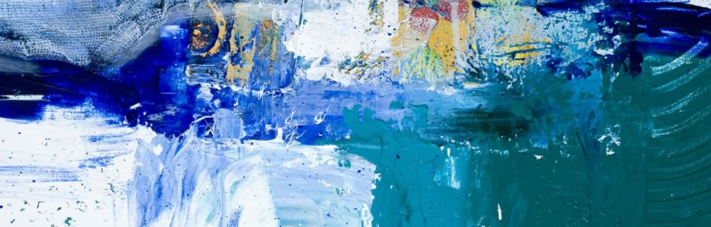
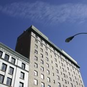

Join over 500 hundred of the most creative and brilliant minds of art colleges all
around the world for five days of lectures by world-renowned art scholars and artists,
and seven days and nights of gallery exhibits featuring the best in contemporary art,
including painting, sculpture, and more, in the beautiful halls of Hotel Contempo
in the heart of Seattle.

About the event
The Roux Academy’s annual conference and exhibit is designed to foster a close-
knit relationship amongst artists at various universities around the world. But sign
up early, as this not-to-miss conference sells out quickly, and the waiting list is long.
In addition, art students are encouraged to send in works from their school
portfolios to be considered for hanging in the CAC exhibit halls, as well as to be
selected as a Featured Artist.
Featured artist
The Roux Academy selects approximately 200 distinct pieces of contemporary art
for display in their collective exhibit. Nine individuals are granted his or her own
exhibit hall to display entire collections or themed pieces. Each Featured Artist has
an opportunity to speak at the conference to share his or her vision, perspective,
and techniques with conference attendees.
CAC speaking events and gallery exhibits take place inside Hotel Contempo, at
309 1st Avenue, in Downtown Seattle. Just a walk to the Space Needle, and a
sampling of restaurants and shopping makes the venue a much sought-after
location for conferences, year after year.
Hotel Contempo is the perfect spot for a gathering of modern artists. Not only are
the conference rooms and halls decked with breathtaking contemporary art and
sculptures, but the individual rooms are as unique as the renowned artists who
were commissioned to decorate them. From the Ross Monroe Purple suite filled
wall to wall with paintings to the Tess Lessinger Sculpted Universe suite, with
dozens of original sculptures, visitors are sure to be intrigued and comforted during
their stay at Hotel Contempo.
About the event
The Roux Academy’s annual conference and exhibit is designed to foster a close-
knit relationship amongst artists at various universities around the world. But sign
up early, as this not-to-miss conference sells out quickly, and the waiting list is long.
In addition, art students are encouraged to send in works from their school
portfolios to be considered for hanging in the CAC exhibit halls, as well as to be
selected as a Featured Artist.
Barot Bellingham
Barot has just finished his final year at The Royal Academy of Painting and
Sculpture, where he excelled in glass etching paintings and portraiture. Hailed as
one of the most diverse artists of his generation, Barot is equally as skilled with
watercolors as he is with oils.
Jonathan G. Ferrar II
Labeled as “The Artist to Watch in 2016” by the London Review, Johnathan has
already sold one of the highest priced commissions paid to an art student, ever on
record. The piece, entitled Gratitude Resort, a work in oil and mixed media, was
sold for $750,000.
Hillary Hewitt Goldwynn-Post
Hillary is a sophomore art sculpture student at New York University, and has
already won all the major international prizes for new sculptors, including the
Divinity Circle, the International Sculptor’s Medal, and the Academy of Paris
Award. Hillary’s CAC exhibit features paintings that contain only water images
including waves, deep sea, and river.
Hassum Harrod
The Art College in New Dehli has sponsored Hassum for his entire undergraduate
career at the university, seeing great promise in his contemporary paintings of
landscapes - that use equal parts muted and vibrant tones. Hassum will be
speaking on “The use and absence of color in modern art”.
Jennifer Jerome
A native of New Orleans, much of Jennifer’s work has centered around abstract
images that depict flooding and rebuilding, having grown up as a teenager in the
post-flood years. Despite the sadness of devastation and lives lost.
LaVonne L. LaRue
LaVonne’s giant-sized paintings all around Chicago tell the story of love, nature,
and conservation - themes that are central to her heart. LaVonne will share her
love and skill of graffiti art on Monday’s schedule, as she starts the painting of a 20-
foot high wall in the Rousseau Room of Hotel Contempo in front of a standing-
room only audience in Art in Unexpected Places.
Constance Olivia Smith
Constance received the Fullerton-Brighton-Norwell Award for Modern Art for her
mixed-media image of a tree of life, with jewel-adorned branches depicting the
arms of humanity, and precious gemstone-decorated leaves representing the
spouting buds of togetherness.
Riley Rudolph Rewington
A first-year student at the Roux Academy of Art, Media, and Design, Riley is
already changing the face of modern art at the university. Riley’s exquisite abstract
pieces have no intention of ever being understood, but instead beg the viewer to
dream, create, pretend, and envision with their mind’s eye. Riley will be speaking
on the “Art of Abstract” during Thursday’s schedule.
Xhou Ta
A senior at the China International Art University, Xhou has become well-known for
his miniature sculptures, often the size of a rice granule, that are displayed by rear
projection of microscope images on canvas. Xhou will discuss the art and science
behind his incredibly detailed works of art.
Schedule
With over 35 seminars and 60 exhibits at this year’s Roux Academy CAC, there is
truly something for every art student. Learn about color, light, and texture; see
spray paint tagging in a new light, as a breath-taking 20 ft high graffiti wall is built
before your very eyes over the course of the week; and rub paint brushes with
some of the most talented artists in the world.
Monday, March 7, 2016
Art in Full Color
The first day of CAC events and exhibits is kicked off under the theme of Art in Full
Color From a demonstration in graffiti art on a wall of the Rousseau Room, to the
exhibit of colorful glazed modern glassware in the Dover Hall, Art in Full Color will
get CAC started in full swing!
Art in Unexpected Places
09:30–10:30am: Elizabeth Hall
Watch LaVonne L. LaRue, a Chicago graffiti artist share her love and skill of mural
art on Monday’s schedule, as she starts the painting of a 20-foot high wall in the
Rousseau Room of Hotel Contempo, which will be finished at the end of the
conference. Make sure to show up a bit early, as this session will be standing-room
only.
Art in Full Bloom
11:00am–1pm: Victoria Hall
Drawing and painting flowers may seem like a first-year art student’s assignment,
but Constance Smith brings depth, shadows, light, and color to new heights with
his unique technique of painting on canvas with ceramic glaze. This session is sure
to be a hit with mixed media buffs.
Still Life
2:30–4:00pm: Dennison Hall
Grab your pencils, charcoal, acrylics, watercolors, or whatever painting tools suit
your fancy, and participate in the capturing of various still life settings that are
staged all around Dennison Hall. You won’t believe the wealth and depth of
choices.
Tuesday, March 8, 2016
Water in Art
Water in Art is the theme for the second day, as art students from around the world
gather at the Fountain of Intrigue in the gardens of Hotel Contempo to create ice
sculptures, and art lecturers discuss the use of water as an art material, and water
as an art subject.
Water in Art Kickoff Session
09:30–10:30am: Elizabeth Hall
Jennifer Jerome, a native of New Orleans, whose work has centered around
abstract images that depict flooding and rebuilding, will talk about how the floods
inspired her artistically, and how, despite the sadness of devastation and lives lost,
her work also depicts the hope and togetherness of a community that has
persevered.
Ice Sculptures
10:30–1pm: Fountain Of Intrigue
Get on your mittens and earmuffs, and join your fellow artists at the Fountain of
Intrigue, in the Hotel Contempo gardens, where the ambient temperature has been
turned down to allow the sculpting of ice into the most mysterious and beautiful of
shapes. Richard Reed will share his secrets for chiseling ice into a shape that your
imagination has envisioned. There is an extra fee of $25 for the rental of the tools
needed to sculpt ice, if you plan to participate. And we hope you do!
Deep Sea Wonders
2:30–4:00pm: Dennison Hall
Hillary Hewitt Goldwynn-Post has been inspiring deep sea divers to paint what they
experience under water for nearly two decades. Not only does he explain texture,
color, and tools, be he also explains methods for capturing your under sea
explorations in your mind for future expulsion onto canvas.
The Venue
Hotel Contempo is the perfect spot for a gathering of modern artists. Not only are
the conference rooms and halls decked with breathtaking contemporary art and
sculptures, but the individual rooms are as unique as the renowned artists who
were commissioned to decorate them. From the Ross Monroe Purple suite filled
wall to wall with paintings in his palette of violet and lavender to the Tess Lessinger
Sculpted Universe suite, with dozens of original sculptures, including the bronze-
casted toilet, visitors are sure to be intrigued and comforted during their stay at
Hotel Contempo. For those who opt to stay at another location, there is no
shortage of hotels in Downtown Seattle. Ranging from shabby chic to the ultimate
in sophistication.

Phillips of Bell town
Situated amongt the hip, youthful culture of Downtown Seattle, Phillips of Belltown
is the place to be any time of the day or night. Choose from Jazz and Rock music
at the various music venues, and shop until you drop at an assortment of thrift
stores and upscale boutiques. The hotel itself is a historical gem, with architectural
achievements in every beam, brick, and support.
Hotel founder, Henry Chasings, had a love of otters, having been raised in an
Alaskan village where otters played out his back door. As his tribute to the sea
creatures of his early days, Henry was insistent upon having an otter in every hall,
wall, and room inside the Otter Renaissance Hotel.
Seattle’s South Lake Union district plays home to the ultra modern Rage Hotel, that
is outfitted with a state-of-the-art computer and printing facility in the penthouse,
and draws tech professionals from all over the world for business conferences and
vacations, alike.
In the heart of the West Edge district in Seattle, Gwendoline’s Fancy, named after a
Navy submarine that got lost at sea in 1910, is a central landing place for history
buffs who can immerse themselves in the Museum of History located in the hotel
mezzanine. For those travelers who aren’t into history, there are plenty of other
nearby sights to keep them entertained, including Pike Place Market and the
Seattle Art Museum.
Each year, nine individuals are honored as Featured Artists - each being granted his or her
own exhibit hall to display entire collections or themed pieces.
Check out our mobile site. Our mobile site contains schedules, and exhibit/artist
details, accessible simply by scanning QR codes located all around the venue exhibit halls.
To attend the Roux Academy 2016 Contemporary Art Conference, please complete
the information below.
Featured Artists
Each year, nine individuals are honored as Featured Artists - each being granted his or her
own exhibit hall to display entire collections or themed pieces. Each Featured Artist has an
opportunity to speak at the conference to share his or her vision, perspective, and techniques
with conference attendees.